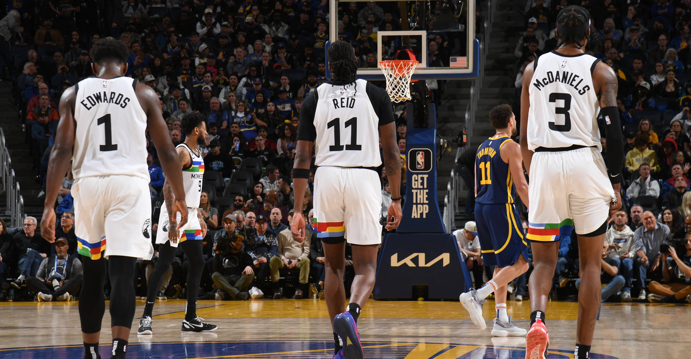

2013 - 2017
Western University
Computer Science

About Me
Born and raised in Toronto, Canada, I grew up a big sports fan. My favorite hobbies have always been watching and playing basketball, hockey and baseball. My work career sits at the intersection of sports and data which is a dream come true for me. I graduated from Western University in 2017 with a computer science degree and since then I've been focused on leveraging data to help basketball organizations make more informed decisions.
My tech stack includes Python, R, JavaScript, jQuery, React and SQL. I'm also fascinated with the incredible potential of agentic coding. I'm passionate about building tools and systems that turn complex data into clear, actionable insight for decision-makers.
2013 - 2017
Computer Science
Summer 2017
Basketball Operations Intern
Spring 2018
Analytics Intern
2018 - Present
Manager of Basketball Analytics
Work Experience
Oct 2018 - Present
Manager of Basketball Analytics
I lead a cross-functional basketball analytics group spanning engineers, data scientists, and analysts, building the infrastructure, tools, and workflows that support decision-making across the organization. We have built out proprietary internal tooling, a suite of reports and ongoing ad-hoc analysis to help answer the most pressing questions.
Spring 2018
Analytics Intern
I had the pleasure of interning for Luke Bornn and his staff. I supported the Kings' analytics department by helping build core database infrastructure, developing data collection pipelines, and contributing to internal tools used during the 2018 NBA Draft.
Summer 2017
Basketball Operations Intern
I supported the Raptors' Basketball Operations staff through a mix of logistical coordination, basic data engineering, and light draft modeling work. I helped plan draft workout itineraries and was tasked with making sure the schedule was being adhered to. On the data front, I helped with web scraping tasks and statistical research projects tied to player evaluation.
Tech Skills Self-Scout (0-100 grades for each tool)
Programming & Analysis
Querying, modeling, and analytical workflows built for clarity, speed, and reliability.
Web & Product
Translating complex ideas into internal products, workflows, and front-end experiences that teams can actually use.
Systems & Workflow
Connected pipelines, internal tooling, and agentic workflows designed to reduce friction and improve trust in the data.